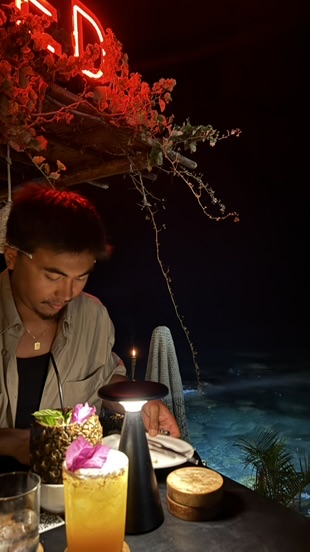
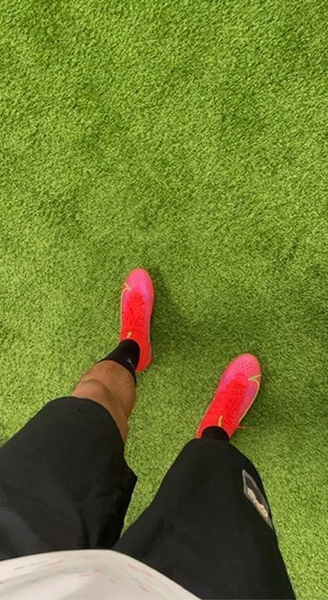
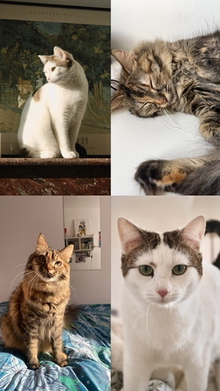
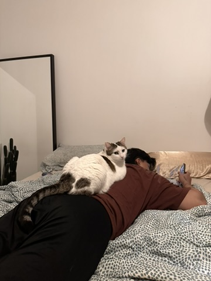

Enchanté, moi c'est Daryl.
Product Designer. Sportif. Toujours le sourire.






On me décrit souvent comme un rayon de soleil. Et avec moi, on ne s'ennuie pas.
Côté boulot, j'ai commencé par vouloir être développeur. Puis j'ai découvert le design : un endroit où l'on a le droit de se tromper et de recommencer. Aujourd'hui, je code de nouveau, avec l'IA. La boucle est bouclée.
Je suis du genre organisé, un peu maniaque, et curieux de tout. Un produit compliqué ? J'ai envie de le rendre simple.
Hors écran, je joue au foot, le sport qui rassemble par excellence. Je cours aussi, je vais à la salle, je pars en rando ou à moto. En 2027, je vise un marathon et un triathlon. Un Ironman ? Un jour, peut-être.
J'ai aussi deux passions à part : la plongée, et les 24 Heures du Mans, où je vais presque tous les ans avec mon père. Le reste du temps : ciné (team Marvel), restos, voyages, et toujours bien entouré. Sans oublier mes deux chats, qui règnent sur la maison.
Et demain ? Transmettre à mon tour : enseigner, accompagner des designers, et pourquoi pas les manager.
Disponible pour un CDI · Île-de-France
Votre prochain Product Designer, c'est peut-être moi.
Je cherche une équipe où concevoir des produits utiles, du terrain jusqu'au code. Parlons-en.